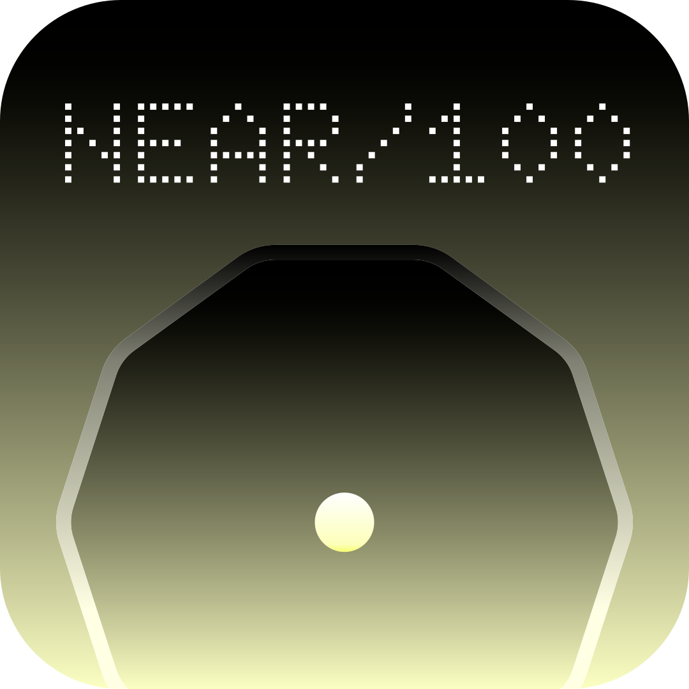

Your stellar neighbourhood
100 STARS · ONE STARTING POINT
NAVIGATION NOTES / 001
The Sun and the 99 nearest stellar components in The 10 parsec sample in the Gaia era, CDS version of 25 August 2023. The selection extends to 19.414 light-years.
Reylé, Jardine, Fouqué, Caballero, Smart & Sozzetti (2021), A&A 650, A201, with the 2023 update. The compilation combines Gaia EDR3 with measurements from the literature, including bright stars and multiple systems.
Distances are calculated from parallax: d = 1000 / π, in parsecs. ICRS coordinates at the epochs listed in the cards are rotated into mean J2000 ecliptic axes (obliquity 23.439291°). The plane is a geometric reference, not the galactic plane.
Stars are counted individually, including white dwarfs and components classified as LM?; a question mark indicates an uncertain classification in the source. Planets and brown dwarfs are excluded. The Sun is added at the origin. The selection reflects this catalogue version and is not a live census.
Positions and distances are to scale. Sizes, halos and colours are symbolic: colours roughly follow spectral type. Multiple stars may overlap; select each component from the catalogue or its companion’s card. No orbital motion or evolution over time is simulated.
Mouse: drag to orbit, scroll to zoom, right-drag to pan. Trackpad: drag and scroll. Touch: one finger rotates; two fingers zoom and pan. With the map focused, use the arrow keys to rotate, + / − to zoom, and Home to return to the Sun. Esc closes cards.
Original design inspired by the visual language of Gaia Mary / Project Hail Mary. No proprietary assets reused. Three.js (MIT) · IBM Plex Mono (OFL).